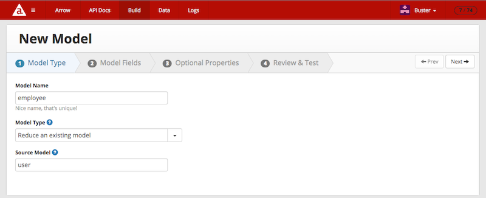
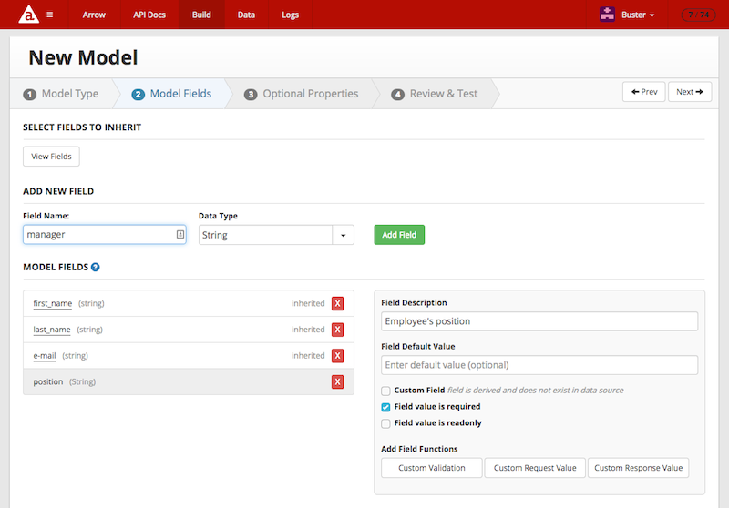
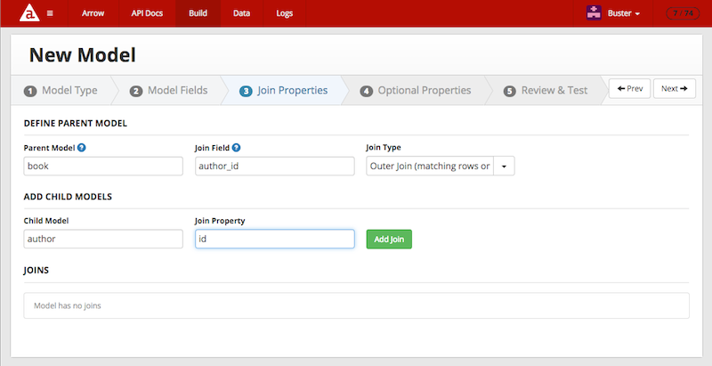
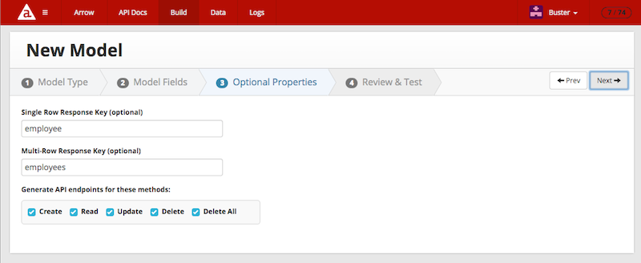
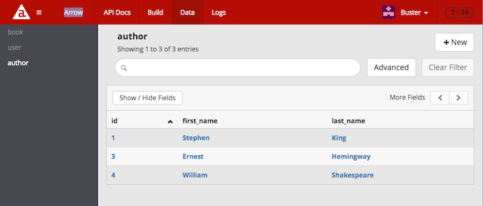

API Builder Console
Introduction
Use the API Builder Console to help you create your API Builder application and manage data in your application.
By default, when you create a new project and run it locally, the admin console is enabled by default and available using the console path, that is, http://localhost:8080/console. Navigate to the admin console in your web browser.
Configuration
To configure access to the API Builder Console, open the project's ./conf/default.js file and edit the admin key. The admin key is a dictionary of key-value pairs that control the access to the API Builder Console, such as restricting which users or organizations can access the Admin console or the name of the Admin console endpoint.
The admin dictionary can contain the following keys:
|
Key |
Type |
Default |
Description |
|
allowedHosts |
Array<String> |
- |
When the application is in production, restrict access to the admin console to the specified hosts. |
|
apiDocPrefix |
String |
/apidoc |
Path to access the generated API docs. |
|
css |
Array<String> |
- |
CSS files to inject to customize the styling of the Admin Console and API docs. Files must be relative to ./web/public/ folder or absolute URLs. |
|
customHTMLErrorPage |
String |
- |
HTML content to display for unauthorized access (HTTP 401 error code). |
|
disableAuth |
Boolean |
false |
Set to true to disable authorization to access the admin console. |
|
disableAPIDoc |
Boolean |
false |
Set to true to not display the generated API Docs. |
|
enableAdminInProduction |
Boolean |
true |
Set to true to enable the admin console in the production environment. |
|
enabled |
Boolean |
true |
Set to true to enable the admin console. |
|
js |
Array<String> |
- |
JavaScript files to inject to customize the styling of the Admin Console and API docs. Files must be relative to ./web/public/ folder or absolute URLs. |
|
prefix |
String |
/arrow |
Path to access the admin console. |
|
validEmails |
Array<String> |
developer's e-mail address |
When the application is in production, restrict access to the admin console to the specified accounts. |
|
validOrgs |
Array<Number> |
developer's organization |
When the application is in production, restrict access to the admin console to the specified organizations. |
Example:
{ admin: { // control whether the admin website is available enabled: true, // the prefix to the admin website prefix: '/arrow', // the prefix for the public apidocs website apiDocPrefix: '/apidoc', // if you set disableAuth, in production only your API docs will show up disableAuth: false, // if you set disableAPIDoc, you APIs docs will not show up (regardless of disableAuth) disableAPIDoc: false, // set to true to allow the admin website to be accessed in production. however, you will still need a // login unless disableAuth is false. if you set this to false, the admin website will not be enabled // when in production (still respects enabled above) enableAdminInProduction: true, // set the email addresses you want to enable while in production validEmails: ["jsmith@foo.com"], // set the organization ids you want to enable while in production validOrgs: [199546299] // custom error page for unauthorized access (HTTP 401 error code) customHTMLErrorPage: '<p>No, no, no...</p>', // set the list of IP addresses, IP ranges and hostnames from which connections to the admin interfaces // will be accepted allowedHosts: [ '127.0.0.1', 'myhost.axawy.com', '10.1.1.1/24', ] } }API Builder
The API Builder tab provides a getting started guide that you can reference to help you write your API Builder application. Click the heading in the left navigation to jump between topics.

API Docs
The API Docs tab in the API Builder Console contains generated docs of your API Builder application APIs including how to call the API, multiple examples and the ability to test the APIs. The generated docs use the information in the description fields of your JavaScript definition files to fill in some of the information.

Use the left navigation to jump between the different components of the API Builder application and the overview section.
-
Overview: Provides general information about using the APIs.
-
APIs: Lists all model APIs and custom APIs defined in the application. The APIs are listed by API group name or model name. To the left of the API is a tab group containing examples of invoking the API from different clients. Below the API is an API test section. Enter parameters to invoke on the API, select a response format, then click Execute.
-
Models: Lists all models the application defines and models supplied by the connectors. Click on a model to get more information about it, including its fields.
-
Blocks: Lists all blocks the application defines. Click on a block to get more information about it, including which APIs or Models use them.
-
Connectors: Lists all connectors included in the application. Click on a connector to get more information about it, including which models use it.
Note that the public API Docs endpoint (/apidocs/ by default) will only include the Overview section without the Authentication section and the APIs section, including the examples, but without the ability to test them through the console.
API Builder API and Swagger
API Builder APIs contain a Swagger definition that can be used to programmatically import APIs using tools such as Axway API Manager.
API Builder project Swagger
Your API Builder project Swagger file describes all of the APIs in the project that can be accessed via the following URL:
https://<SUB_DOMAIN_TOKEN>.cloudapp-enterprise.appcelerator.com/apidoc/swagger.jsonIndividual APIs
Each API also has a separate Swagger definition associated with the API itself. This is convenient if you only need access to one API and not expose the entire API set by your API Builder project.
For example, if you have a model and associated APIs for an account as follows:
var Arrow = require('arrow');var Model = Arrow.Model.reduce('appc.salesforce/Account', 'Account', { fields: { Name: { type: String, description: 'Account Name', maxlength: 255, required: true, optional: false }, Type: { type: String, description: 'Account Type', maxlength: 40 }, Phone: { type: String, description: 'Account Phone', maxlength: 40 } }, actions: [ 'create', 'read', 'update', 'delete', 'deleteAll' ]});module.exports = Model;The API documentation for this API can be found via this URL:
https://<SUB_DOMAIN_TOKEN>.cloudapp-enterprise.appcelerator.com/apidoc/docs.html?apis/account.htmlThe Swagger definition for the account can be found here:
https://<SUB_DOMAIN_TOKEN>.cloudapp-enterprise.appcelerator.com/apidoc/docs.json?apis/accountSwagger files for the API Builder project and individual APIs can be found on the Github page API Builder API Swagger Interface.
Build
The Build tab lets you create new models. The model build process involves the following steps:
-
Name your model and select the model type.
-
Add fields to your model.
-
Configure the model.
Note that you may only build models when executing the project locally (in development). The build console will not work in production even if you enable the admin console in production.
Model Type
In the Model Type step, enter a name for your model and select a model type. For reduced or extended models, you will need to select the parent model to base your model. For empty or schema-less models, you will need to select a connector to persist data to. When you are done, click Next in the top navigation to continue.

Model Name
Enter a name for your model. The name must be unique for all of the application's models.
Model Type
Select a model type:
-
Empty and Schema-less model: create a new model not based on an existing model, where you will need to define the fields and select a connector to persist data to.
-
Extend an existing model: create a new model based off an existing model. The model will inherit all of the existing fields from the source model. You may also add new fields to the model. You will need to select the source model to base the model on.
-
Reduce an existing model: create a new model based off an existing model. Select fields from the source model to inherit and add new fields to the model. You will need to select the source model to base the model on.
-
Composite model (no join): create a new model by combining two or more models together. The model data will not be joined together but present as one model.
-
Composite model (join): create a new model by combining two or more models together. You will need to define a join operation to combine the model data together.
Conditional Steps
The following steps appear when selecting certain models types.
-
Connect – select the connector to persist data to for empty or schema-less models.
-
Source model – select the model to inherit fields from for extended or reduced model type.
Model Fields
Depending on the model type, you can either create new fields or select inherited fields to add. After you add the fields, you can configure them by changing properties or adding validation or return logic. When you are done, click Next in the top navigation to continue.

Add New Fields
For all models, you can add fields by entering a name for the field, selecting the data type, and clicking Add Field.
For reduced models, click the View Fields button to open a dialog that presents the source model's fields. Select the fields you want to include in the model, the click Add Fields.
For composite models, you may add three different kinds of fields. Select:
-
Select single field from existing model to include a model field in the composite mode. Enter a model name and field name of the model, then click Add Field.
-
Map new field to entire model to map the entire model instance to a field name in the composite model. Enter a field name and a model name, and select the data type, then click Add Field.
-
Create new field to add a new field to the composite model. Enter a field name, select a data type, then click Add Field.
If you are creating a composite model, you must add fields from at least two different models.
Model Fields Table
Once you have added all your model fields, you can modify them by changing properties or adding custom logic to them. Note that for extended models, you may only rename them, that is, map a different name to the source model field.
To remove a field, click the red box next to the field name.
If the name of the field is underlined, the field is inherited and you can rename it. Click the field name to rename the field, that is, map a different name to the source model field.
To modify a field, click the field, then:
-
Field Description – enter a description for the field, which appears in the generated API docs.
-
Field Default Value – enter a default value for the field.
-
Custom Field – enable if the field does not exist in the connector's datasource and is derived from another field.
-
Field value is required – enable to indicate that the field is required to create a new model.
-
Field value is readonly – enabled to indicate that the field is read-only, that is, it cannot be modified using the model APIs.
-
Custom Validation – click to add custom logic to validate the field.
-
Custom Request Value – click to add custom logic to process the field data before the connector gets it.
-
Custom Response Value – click to add custom logic to process the field data before the client gets it.
Join Properties
If you are creating a composite model with a join operation, you will need to complete the Join Properties step. In the Join Properties step, you must specify the join operation(s). To specify a join operation, select the parent model, the join operation, then the child model to join to the parent model.
-
In Define the Parent Model, enter the name of the parent model, enter the name of the field in the parent model to execute the join on, and then select the join operation. Select either Inner Join or Outer Join. In an inner join, all parent records will be returned if there is a match or not. In an outer join, only parent records that match the child records will be returned.
-
In Add Child Models, enter the name of the child model to join with the parent model data and the name of the child field to match with the parent field.
-
Click Add Join.
The Join Operation will be added to the Joins table below. To remove a join operation, click the red box next to it.
Click Next in the top navigation to continue.

Optional Properties
In the Optional Properties step, you may modify the model's return parameters or select which APIs to enable for the model.
-
Single Row Response Key – enter the name of the property to use in the response for a single record.
-
Multi-Row Response Key– enter the name of the properties to use in the response for an array of records.
-
Generate API endpoints for these methods – enable or disable the options to select which APIs to enable or disable for the model.
Click Next in the top navigation to continue.

Review and Test
In the Review & Test step, you can review the code that will be generated for the model. Click Save Model.
Note that you may need to restart the API Builder application after creating a new model.
Examples
Example 1: Create a Schema-less Model
To create a schema-less model, a model not based on a previously created model, select a connector to persist the data to and define the fields you want to include in your model.
Step 1: Model Type
-
In the Model Name text field, enter a name for the model.
-
In the Model Type drop-down, select Empty or Schema-less model.
-
In the Connector drop-down, select a connector to persist data to.
-
In the top navigation, click Next.
Step 2: Model Fields
-
To add new fields, enter a field name, select the field data type, then click Add Fields.
-
In the top navigation, click Next.
Step 3: Optional Properties
-
Configure optional attributes for your model.
-
In the top navigation, click Next.
Step 4: Review & Test
-
Click Save Model.
The following examples create a new book model by defining its own fields, which uses the memory connector.

Example 2: Reduce a Model
To create a reduced model, select a source model, select the fields you want to inherit from the source model and optionally add more fields.
Step 1: Model Type
-
In the Model Name field, enter a name for the model.
-
In the Model Type drop-down, select Reduce an Existing Model.
-
In Source Model, enter a name of an existing model to inherit fields from.
-
In the top navigation, click Next.
Step 2: Model Fields
-
To add inherited fields, click View Fields, select the fields you want to use, then click Add Fields.
-
To add new fields, enter a field name, select the field data type, then click Add Fields.
-
In the top navigation, click Next.
Step 3: Optional Properties
-
Configure optional attributes for your model.
-
In the top navigation, click Next.
Step 4: Review & Test
-
Click Save Model.
The following example creates a new model called author by reducing an existing model called user. The author model only uses the first_name and last_name fields.

Example 3: Composite Model with a Join Operation
To create a composite model, add fields from two or more models, then define a join operation to combine record data from the models.
Step 1: Model Type
-
In the Model Name text field, enter the library for the model name.
-
In the Model Type drop-down, select Composite model (join).
-
In the top navigation, click Next.
Step 2: Model Fields
-
To add an existing field from a model, select Select single field from existing model, enter the model name in the Field Source Model text field, enter the field to include in the Model Field text field, then click Add Field.
-
To add the entire model object as a field, select Map new field to entire model, enter the model name in the Field Source Model text field, enter the field name in the Field Name text field, select the data type from the Data Type drop-down, then click Add Field.
-
To add an existing field from a model, select Select single field from existing model, enter the model name in the Field Source Model text field, enter the field to include in the Model Field text field, then click Add Field.
-
In the top navigation, click Next.
Step 3: Join Properties
-
Enter the name of the parent in the Parent Model text field, enter the field to join in the Join Field text field, then select a join type from the Join Type drop-down.
-
Enter the name of the model to join with the parent model in the Child Model text field, enter the field name to join with the parent model in the Join Property text field, then click Add Join.
-
In the top navigation, click Next.
Step 4: Optional Properties
-
Configure optional attributes for your model.
-
In the top navigation, click Next.
Step 5: Review & Test
-
Click Save Model.
The following example creates a new composite model by combining the previous two models (author and book). The composite model will join the two models based on the author ID. The record will return the author's first name and last name, and the entire book record as an object. The model will only allow read operations.

Data
The Data tab lets you manage the application's model data. You can add, change, delete, and search for model records.

To add a new model:
-
Select the model in the left navigation.
-
Click the + New button.
-
Input the model data.
-
Click Save.
To change a model record:
-
Select the model in the left navigation.
-
Click the record to modify.
-
Modify the data.
-
Click Save.
To delete a model record:
-
Select the model in the left navigation.
-
Click the record to delete.
-
Click Delete.
To search for a record, enter a search term in the search bar at the top to filter the table or click Advanced to restrict the search to a specific model field. Use the Clear Filter button to reset the search filter.
Logs
The Logs tab lets you review user access log, which also includes requests initiated from the API Builder Console.